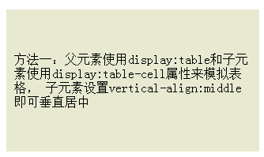

一、单行文本垂直居中
单行比较简单，把line-height设置为box的大小可以实现单行文字的垂直居中
代码：
<div style="line-height:100px;border:dashed 1px #0e0;">
This is a test.
</div>
浏览器显示效果
二、多行文本垂直居中的三种方法
方法一：父元素使用display:table和子元素使用display:table-cell属性来模拟表格，子元素设置vertical-align:middle即可垂直居中。
<div style=" width: 300px;height: 200px;padding:10px;background-color: #E7E9D1; display: table;">
<span style=" display: table-cell;vertical-align: middle;">
方法一：父元素使用display:table和子元素使用display:table-cell属性来模拟表格，
子元素设置vertical-align:middle即可垂直居中
</span>
</div>
浏览器显示效果

方法二：对子元素设置display:inline-block属性，使其转化成行内块元素，模拟成单行文本。父元素设置对应的line-height。对子元素设置vertical-align:middle属性，使其基线对齐。添加line-height属性，覆盖继承自父元素的行高。
<div style=" width: 300px;padding:10px;background-color: #E7E9D1; line-height: 200px;">
<span style=" display: inline-block;line-height: 20px; vertical-align: middle; ">
方法一：父元素使用display:table和子元素使用display:table-cell属性来模拟表格，
子元素设置vertical-align:middle即可垂直居中
</span>
</div>
浏览器显示效果
方法三：脱离文档流的居中方式，把内部div设置宽高之后，再设置top为50%，使用负边距调整，将margin-top设置为负的高度的一半就可以垂直居中了。缺点：需要计算出多行文字固定的高度。高度一旦改变，负边距也要调整。
<div style="width: 300px; height: 160px;padding:10px;background-color: #E7E9D1;position: relative;overflow: hidden;">
<div style="position: absolute;top: 50%;width: 300px;height: 110px; margin-top: -55px;">
方法三：脱离文档流的居中方式，把内部div设置宽高之后，再设置top为50%，使用负边距调整，
将margin-top设置为负的高度的一半就可以垂直居中了。缺点：需要计算出多行文字固定的高度。
高度一旦改变，负边距也要调整。
</div>
</div>
浏览器显示效果